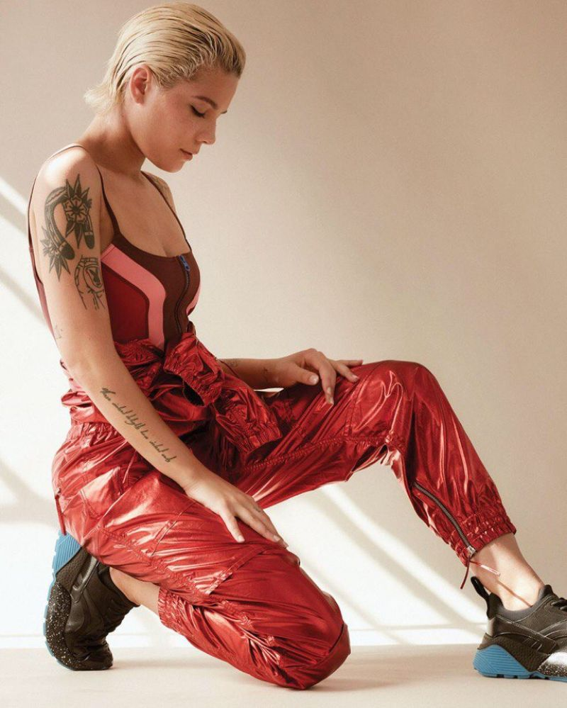
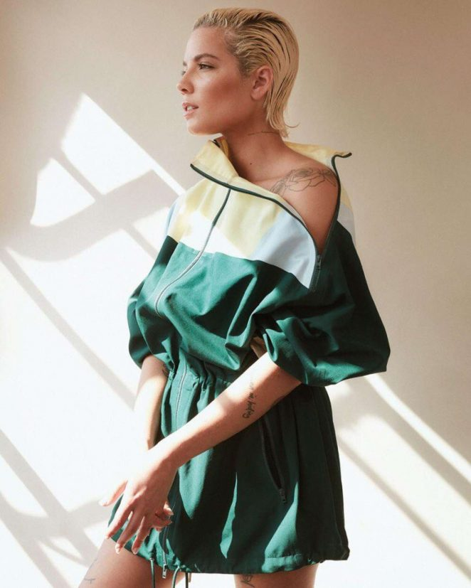
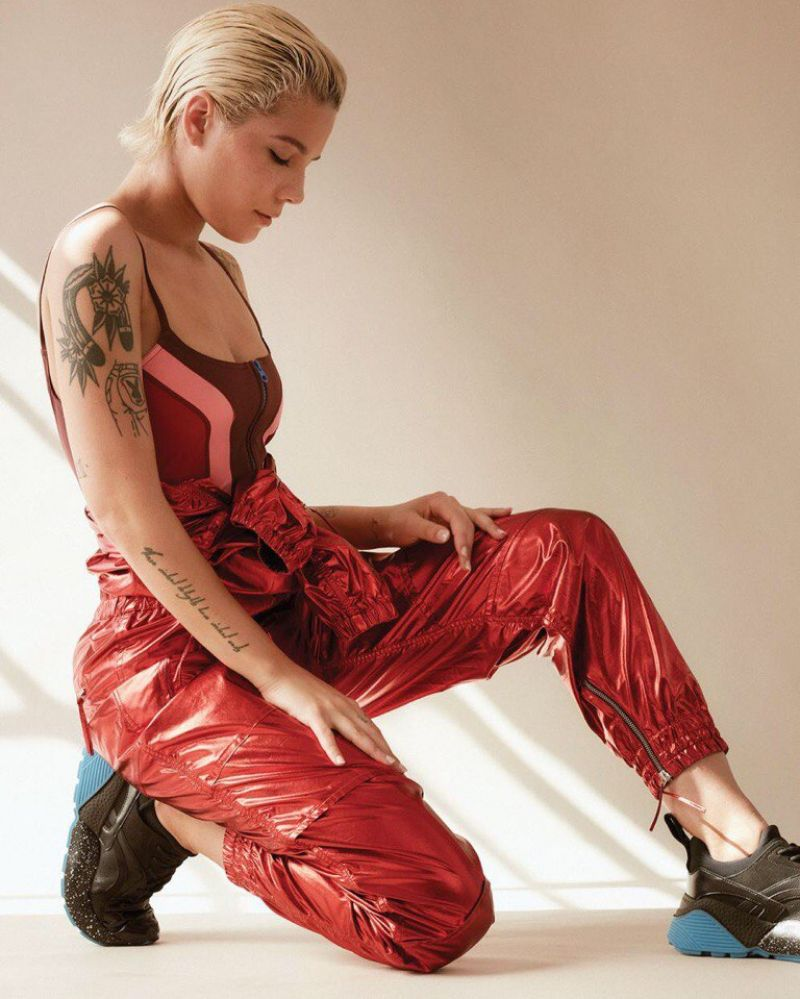
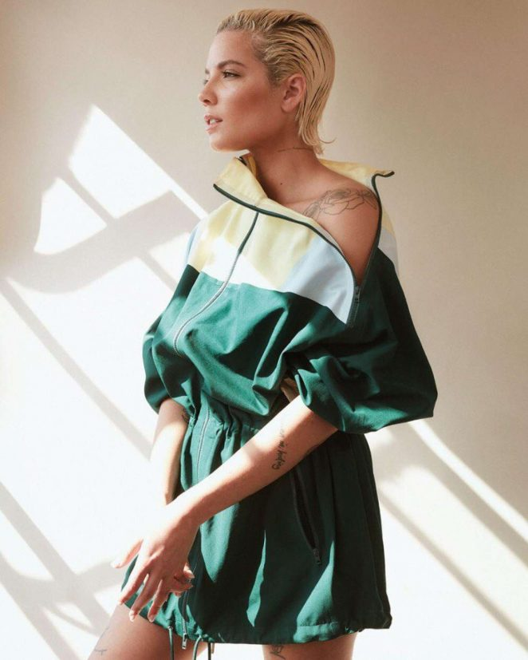
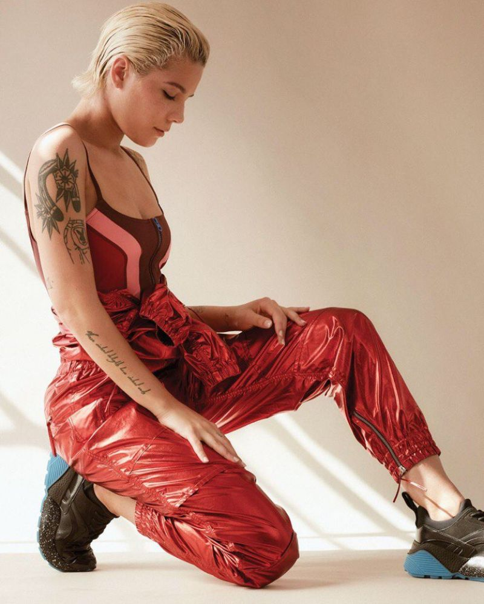
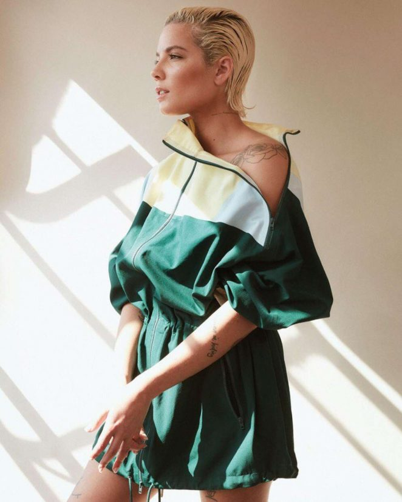
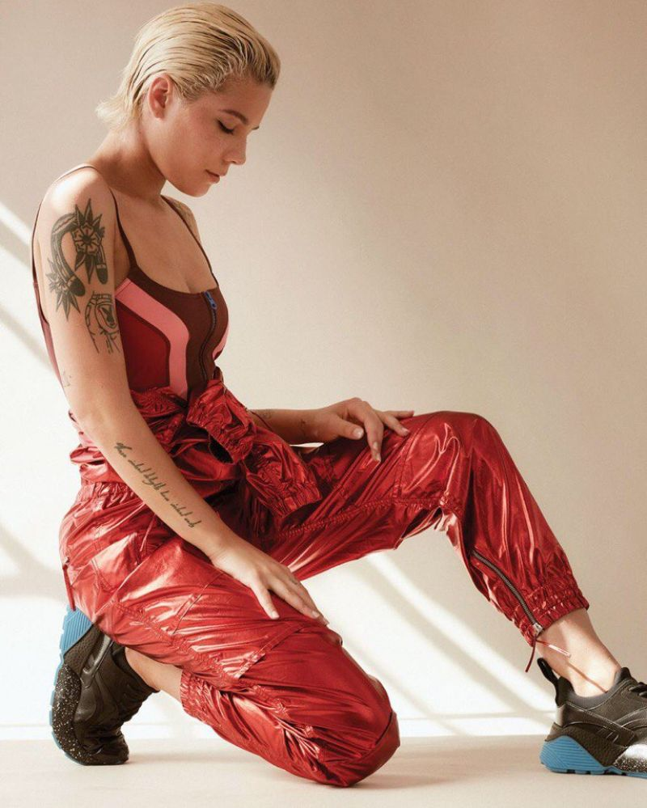
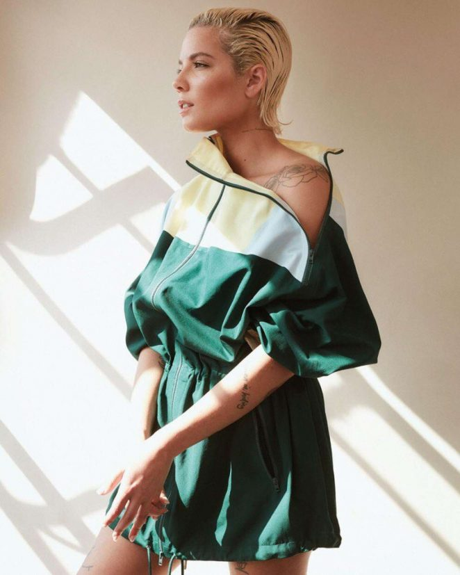

» Ashley Nicolette Frangipane, known professionally as Halsey, is an American singer and songwriter. Gaining attention from self-released music on social media platforms, she was signed by Astralwerks in 2014. By early 2017 Halsey had released one studio album, one extended play, five singles and five music videos.
» Halsey has sold 22 million records in the US alone, based on certifications alone. Her awards and nominations include four Billboard Music Awards, one GLAAD Media Award, a Guinness World Record, a MTV Video Music Award and a Grammy Award nomination. Halsey is noted for her distinctive singing voice, and her music is usually based on her personal experiences. Outside of her career, she has been involved in suicide prevention awareness and sexual assault victim advocacy.
» The New Jersey native took her moniker from a New York L train subway stop, and her adopted city plays a large role in both the sound and lyrics of her dark, gritty electro-pop. In 2015, she debuted with Badlands, which hit number two on the Billboard 200 chart and sold well. Continued success came in 2016, when her featured appearance on the Chainsmokers' "Closer" helped push the single to the top of the charts. In 2017, Halsey was back with Hopeless Fountain Kingdom, which topped the album chart At the end of 2018, she notched her first number one single as a lead artist, "Without Me."
» She started 2019 with a series of high-profile collaborative singles including "11 Minutes" with Travis Barker and Yungblud, and "Boy with Luv" with K-pop superstars BTS. Promotion for her third full-length, Manic, started in earnest that spring. Singles "Nightmare" and "Graveyard" marked a darker, more introspective direction for the set, while third single "Without Me" became her first number one-charting single as main artist.